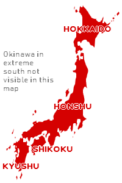

Dans ce cite nous allons découvrir le Japon en général. Nous allons découvrir la culture Japonaise, et pourquoi elle est spéciale et intéressante.
On va vous montrer comment apprendre la langue Japonaise en vous guidant vers les meilleurs sites où vous pouvez pratiquer et étudier cette dérnière, et ceci sans payer même pas un centime!
On va aussi vous montrer les meilleurs endroits à visiter.
Le Japon est un pays insulaire d'Asie de l'Est. Situé dans l'océan Pacifique. Le kanji (日本) qui compose le nom du Japon signifie «Origine du Soleil», c'est pourquoi il est appelé le «La Terre Du Soleil Levant». Il est composé de nombreuses îles, les cinq principales sont:
- Honshu
- Hokkaido
- Kyushu
- Shikoku
- Okinawa

Hokkaido est dans l'extrême nords quant à Okinawa elle est dans l'extrême sud.
Le Japon a une monarchie constitutionnelle, dirigée par un empereur, Actuellement Naruhito; Il sert principalement de chef symbolique et diplomatique du pays. Le chef politique du Japon est le Premier ministre, Shinzo Abe.
Le Japon bénéficie d'une main-d'œuvre hautement qualifiée et instruite, il a la plus grande proportion de citoyens titulaires d'un diplôme dans le monde. Le Japon maintient une armée moderne avec le huitième plus grand budget militaire du monde, utilisé pour des rôles d'autodéfense et de maintien de la paix; il s'est classé comme la quatrième puissance militaire mondiale en 2015.
Le Japon est un pays très développé avec un niveau de vie et un indice de développement humain très élevés. Sa population jouit d'une des espérances de vie les plus élevées et du troisième taux de mortalité infantile le plus bas au monde! En 2019, les citoyens japonais avaient accès sans visa ou visa à l'arrivée à 189 pays et territoires, classant le passeport japonais au 1er rang mondial, à égalité avec Singapour.
«Utilisez la barre de navigation pour en savoir plus»